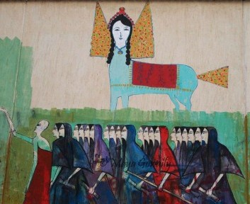
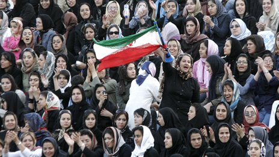
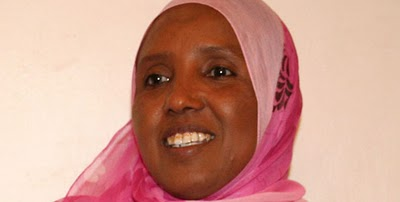
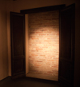
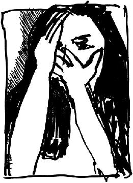
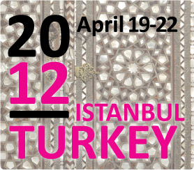

تغییر برای برابری
تغییر برای برابریعلیرغم اینکه بلوک اسلامگرایان متشکل از حزب عدالت و توسعه اخوان المسلمین و النور(سلفی ها) قریب 70% از کرسی های مجلس را در اختیار خود دارند، اما غلبه آنان بر سیر تحولات سیاسی مصر محرز نیست. بلوک اسلامگرایان سعی دارد تا بطور سیستماتیک عرصه های بیشتری را زیرتسلط خود در آورده ودگراندیشان را از نهاد های قدرت حذف کند. آنان بویژه از طرف جوانان که نقش تعیین کننده ای در سقوط دیکتاتوری مبارک داشته اند، به ایفای نقش "آقا بالا سر" متهم شده اند...
پذيرش > واژه كليدها > صفحه بندی > ستون وسط
ستون وسط
مقالهها
-

احزاب اسلامی مصر به چالش کشیده می شوند
10 آوريل 2012 -
مروری بر 4 سال عملکرد دولت احمدی نژاد درحوزه زنان: از تبعیض تا تبعیض / محبوبه حسین زاده
23 سپتامبر 2009, بوسيلهى pariبرغم تلاش برای به حاشیه راندن زنان، دور کردن آنان از فضاهای عمومی و اجتماعی و خانه نشین کردن آنان موج برابری خواهی و رفع تبعیض های حقوقی و اجتماعی از زنان آن چنان ابعاد گسترده ای به خود گرفت که برای اولین بار پس از پیروزی انقلاب هر سه کاندیدای انتخابات ریاست جمهوری به بیان برنامه های خود برای رفع این تبعیض ها پرداختند، احمدی نژاد وعده ای به زنان نداد و حتی محتواي برنامه چهارم توسعه را با حذف واژه «عدالت جنسيتي» کاملا دگرگون کرد.
-

زنان و خبرها
1 ژوئيه 2013تغییر برای برابری - در سرزمینی که قانون اساسی در ارتباط با ریاست جمهوری، تبعیض آشکار و رسمی جنسیتی را نمایندگی می کند و زنان رسما از حق انسانی انتخاب شدن به عنوان رییس جمهور برخوردار نیستند، بدون شک فرارسیدن ایام انتخابات همچنان بهانهی دیگری است برای مرور وضعیت زنان در میان اخبار.
بر همین اساس، در حالی که مدت زیادی از انتخابات ریاست جمهوری سال 1392 نگذشته است، به بررسی وضعیت زنان و خبرهای مربوط به آنان درچند ماه گذشته می پردازیم تا تصویری از آنچه بر زنان گذشته است حاصل شود. -
 گزارش پانل خشونت علیه دختربچه ها و زنان در کنفرانس موقعیت زنان سازمان ملل(CSW)
گزارش پانل خشونت علیه دختربچه ها و زنان در کنفرانس موقعیت زنان سازمان ملل(CSW)
7 مارس 2011دومین پانل فعالان زن حاضر در اجلاس 55 کمیسیون مقام زن در بعدازظهر 28 فوریه و در ساختمان church center برگزار شد. موضوع پانل به خشونت علیه زنان و دختران در ایران اختصاص داشت. این پانل و دیگر پانل فعالان زن ایرانی در ارتباط با تبعیض جنسیتی در نظام آموزشی ایران توسط آیدوس انجمن ایتالیایی زنان در توسعه و با مدیریت خانم دانیلا کلمبو برگزار شد...
-

زن سیاستمدار ختنه شده تصویب قانون ممنوعیت آن را در مجلس پیش برد
28 مه 2011کنیا در ماه آوریل گذشته قانون ممنوعیت ختنه کردن زنان را به تصویب رساند. این قانون با اکثریت مطلق آراء، پس از سخنرانی نماینده مجلس سوفیا عبدی نور به تصویب رسید. سوفیا در سخنرانی بی نظیر و پر احساس خویش از ختنه شدن خودش در زمان دختری اش سخن گفت...
-

حق "همیشه" با فاشیسم نیست، با مقاومت است
7 دسامبر 2010" جنگ برای مرد است همانطور که بارداری برای زن" عنوان نصب شده بر دیوار و عنوانی آشنا برای زنان ایران ، سخن معروف موسولینی دیکتاتور فاشیست ایتالیا است که همه جای ایتالیاخوانده و شنیده می شد.
-

خشونت علیه زنان: بدون توجیه، غیرطبیعی، اجتناب پذیر
10 دسامبر 2011گزارشی در اعتراض به خشونت علیه زنان این طور شروع می شود، "نصف جمعیت دنیا هستند، اما به همین نسبت از رفاه مادی و معنوی و فرصت های زندگی سهم نمی برند. نیمی از توجه رسانه ای هم به آن ها نیست. همان قدر مردها هم حق اظهار نظر ندارند. فقط 22 درصد از صداهایی که در خبرها می شنویم و می خوانیم مال زن هاست. همه جا با خشونت مواجه اند. آمار سرسام آور جهانی هست و آمار ناپیدای محلی، که هر دو روز به روز افزایش پیدا می کند". این در منطقه ی ما به چه معناست؟...
-

زنان دنیا دست در دست هم به سوی ایجاد جهان بهتر / گزارش اول از ایوید 2012
30 آوريل 2012هفته گذشته بیش از 2000 زن از اقشار و گروههای مختلف و مدافعین حقوق بشر از سراسر جهان در استانبول جمع شدند. شرکت کنندگان چشم انداز فمینیستی، حقوق انسانی زنان، تئوری فمینیستی و کنشگری را مورد بحث قرار می دهند. تم اصلی فوروم هفته گذشته در استانبول "زنان و قدرت اقتصادی" بود. در پایان کنفرانس و بررسی نتایج، اهمیت آنالیز اقتصادی فمینیستی مورد بررسی قرار گرفت. منظور از رشد اقتصادی چیست؟ ریاضت کشی های اقتصادی علایق چه کسانی را دنبال می کند؟ چه کسانی در درجه اول از بحرانهای اقتصادی ضربه می خورند؟...
-
 افراح ناصر روزنامه نگار و خبرنگارمبارز یمنی : ما لیاقت یک جامعه دمکراتیک را داریم ، نه رئیس جمهوری که سه دهه حکومت می کند
افراح ناصر روزنامه نگار و خبرنگارمبارز یمنی : ما لیاقت یک جامعه دمکراتیک را داریم ، نه رئیس جمهوری که سه دهه حکومت می کند
9 ژوئن 2011وقتی انقلاب آغاز شد فهمیدم که می بایست حرف بزنم، حرف خودم را بزنم و تعریف کنم که در خیابانها چه بر سر مردم می آید. همه خبرنگاران بین المللی مجبور به ترک کشور شدند، مقامات دولتی تارنماهای خبری را تعطیل کردند و دوربینهای خبرنگاران را توقیف کردند. من در وبلاگم از عقاید شخصیم می نویسم، در آن عکس و فیلم منتشر می کنم و با مردم حرف می زنم.
-
 تبعاتِ سادهسازیِ بیش از حد و تفکر ثنوی- در حاشیهی گزارش خدیجه مقدم و اعتراض شادی صدر
تبعاتِ سادهسازیِ بیش از حد و تفکر ثنوی- در حاشیهی گزارش خدیجه مقدم و اعتراض شادی صدر
9 اكتبر 2013اقدام "تغییر برای برابری" در ارزیابی و بازاندیشی کمپین یک میلیون امضا گامی شجاعانه و دوراندیشانه است که امیدوارم ادامه یابد. چقدر خوب است که با برخورد فعال و درخواست از همهی دستاندرکارانِ اولیهی کمپین فضایی فراهم شود که افراد بیایند و روایتِ خودشان را بگویند. این روایتهای متفاوت فقط شرحهای گوناگون از حوادث معین نیست، بلکه گونههای متفاوتِ اندیشیدن و نگاه کردن به امور را نیز بازتاب میدهد و رنگینکمانِ اندیشههای حوزهی مسائل زنان را در برابر چشم قرار میدهد.
0 | ... | 300 | 310 | 320 | 330 | 340 | 350 | 360 | 370 | 380 | ... | 450